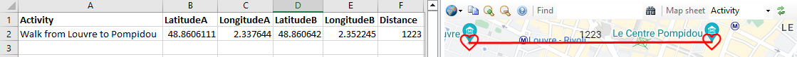

In order for worksheets to automatically draw maps, each row of the sheet represents either Visit to a single place, or an Activity a journey from A to B.
To display these on a map, the worksheet needs to have Latitude and Longitude columns.
Visit
has a single Latitude and LongitudeBy default, as shown here, lines are drawn from one visit to the next. This can be suppressed by setting the StrokeWeight or StrokeOpacity to zero with the drawing tools.
Activity
has an origin: LatitudeA, LongitudeA and a desination LatitudeB, LongitudeB

It is also possible to draw lines between activities by using Latitude and Longitude in addition to LatitudeA, LongitudeA, LatitudeB and LongitudeB.